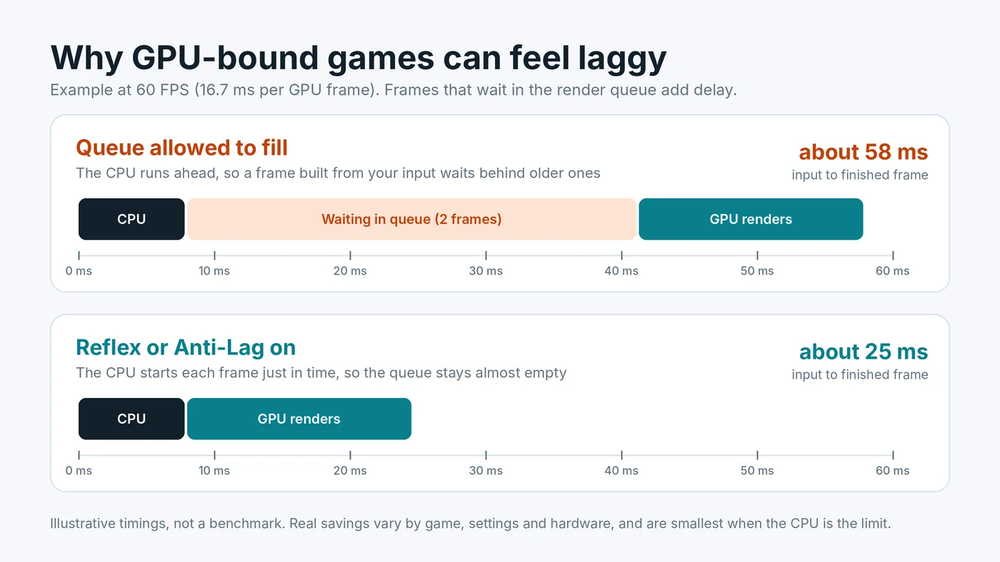

NVIDIA Reflex vs AMD Anti-Lag: Do They Reduce Input Lag?
NVIDIA Reflex and AMD Anti-Lag promise the same thing: less delay between moving your mouse and seeing the result on screen. They do not add frames per second, and in some situations they barely do anything. Whether they help depends on one question this site keeps coming back to: is your graphics card or your processor the limit? This guide explains how both features work, when they make a real difference, and which settings to use.

Input Lag Is Not the Same as Low FPS
Frame rate tells you how many new images reach the screen each second. Input lag, which NVIDIA calls system latency, is how long it takes for one click or mouse movement to show up in one of those images. The two are related, because a higher frame rate shortens each step of the pipeline, but they are not the same number.
A game can run at a steady 90 FPS and still feel heavy to aim with. That usually means something in the chain is holding frames back before they are drawn. Reflex and Anti-Lag target that hidden waiting time. If your problem is choppy motion or a low frame rate, these features will not fix it. If your problem is a game that feels slow to respond, they are worth a look. And if the lag only happens online, it may be your connection instead, so start with telling network lag apart from a slow PC.
Where the Delay Comes From: the Render Queue
Every frame passes through two main stages. First the CPU reads your input, runs the game logic and prepares drawing commands. Then the GPU turns those commands into an image. To keep the graphics card busy, the CPU is normally allowed to work ahead and line up finished commands in a render queue.
That queue is harmless when the CPU is the slower part, because the GPU picks up each frame as soon as it arrives. It becomes a problem when the GPU is the slower part. The CPU keeps preparing frames faster than the GPU can draw them, so frames pile up. A frame built from your latest mouse movement then has to wait behind one or two older frames before it is rendered. At 60 FPS, each waiting frame adds about 16.7 ms.
The chart above shows this with simple example numbers. The frame rate is identical in both cases. The only difference is whether frames sit in the queue, and that alone can more than double the delay in a GPU-bound scene.
What NVIDIA Reflex Does
Reflex is built into the game by the developer. NVIDIA describes it as reducing latency "through precise synchronization of rendering across GPU and CPU." In practice, the game delays the start of each CPU frame so it finishes just as the GPU is ready for it. Your input is read later, the queue stays close to empty, and the frame you see is based on more recent input.
A few details worth knowing:
- Supported cards. NVIDIA's latency guide says Reflex Low Latency works on GeForce GPUs going back to the GTX 900 series.
- On and On + Boost. Most games offer both. Boost keeps GPU clocks higher in CPU-heavy moments, which can trim a little more delay at the cost of some extra power draw.
- Frame generation. When you turn on DLSS Frame Generation, games turn Reflex on automatically to offset the delay that generated frames add.
- Reflex 2. NVIDIA's newer version adds Frame Warp, which shifts the finished frame using your very latest mouse input just before it is displayed. It arrives game by game, so check whether your game lists it.
What AMD Anti-Lag and Anti-Lag 2 Do
AMD has two versions. The original Radeon Anti-Lag is a toggle in AMD Software that works at the driver level. AMD describes it as introducing "a carefully calculated delay" into the driver's handling of the game's graphics commands, so the CPU does not run as far ahead.
Anti-Lag 2 works like Reflex. The developer builds it into the game, and the delay is placed at the best point inside the game's own logic, just before your controls are read. AMD says this gives a significantly greater reduction than the driver version. It supports Radeon RX 5000 series cards and newer and needs a recent Adrenalin driver. If a game offers Anti-Lag 2 in its own settings, use that rather than the driver toggle.
NVIDIA Low Latency Mode and Intel XeLL
NVIDIA Control Panel has its own setting called Low Latency Mode, with Off, On and Ultra. On limits the queue to one frame, and Ultra submits frames just in time from the driver. It is mainly useful for older DirectX 9 and DirectX 11 games that do not support Reflex. In DirectX 12 and Vulkan games the game manages the queue itself, so the driver setting usually has little or no effect. If both are enabled, NVIDIA's guide is clear that in-game Reflex overrides the driver setting, so there is no need to stack them. Our explainer on what separates DirectX 11 from the low-level APIs covers why DirectX 12 and Vulkan games behave differently here.
Intel Arc owners have Xe Low Latency, or XeLL, which ships as part of XeSS 2 in supported games. Intel says it reduces latency "from your keyboard and mouse to what happens on screen." Like Reflex and Anti-Lag 2, it appears as an in-game option when the developer has added it.
When These Features Help Most
The benefit follows the render queue. That makes it easy to predict:
- GPU-bound, GPU usage near 95 to 100%: the biggest gains. This is common at 1440p and 4K, with ray tracing, or with high settings on a mid-range card.
- CPU-bound, GPU usage well below full: small gains or none. The queue is already near empty because the GPU is waiting for the CPU. If that is your situation, read why a GPU can sit well below full usage.
- Frame rate capped below what the GPU can reach: a cap already keeps the queue short, so Reflex adds less, though it rarely hurts.
- Very high frame rates: each frame is already short, so the time saved in milliseconds is smaller, even though competitive players may still notice it.
Not sure which side you are on? Watch GPU usage in an overlay during play, or follow our steps for spotting whether the CPU or GPU sets your frame rate.
Do They Lower FPS?
Usually not by much. Because the CPU waits slightly before starting each frame, average FPS can dip a little in some GPU-bound games. Many players accept that because the game feels noticeably more responsive. Boost modes can raise power use and temperatures slightly, so on a laptop or a hot system you may prefer the plain On setting. As always, results vary by game.
Recommended Settings
- Use the in-game option first. If the game offers Reflex, Anti-Lag 2 or XeLL, set it to On. Try On + Boost on a desktop if you want every last millisecond.
- Fall back to the driver for older games. On NVIDIA, set Low Latency Mode to On or Ultra for DirectX 9 and 11 games without Reflex. On Radeon, enable Anti-Lag in AMD Software for games without Anti-Lag 2.
- Do not stack features. When the in-game option is on, the driver option adds nothing and can be left at its default.
- Combine with variable refresh sensibly. With G-Sync or FreeSync, NVIDIA notes that V-Sync plus Reflex or Ultra Low Latency caps the frame rate just under your refresh rate automatically. See our advice on pairing a frame rate cap with G-Sync or FreeSync.
- Remember frame generation. Generated frames raise FPS but add some delay, which is why games pair them with Reflex or Anti-Lag. Our guide on how frame generation interacts with a CPU limit covers the trade-off.
How to Check the Difference
Some games with Reflex show a latency figure in their performance overlay, and NVIDIA's overlay can display PC latency in supported games. AMD's Anti-Lag 2 SDK also includes a latency monitor for developers. If no number is available, test a repeatable scene with the feature off and on, and pay attention to how quickly the camera follows a fast flick. A difference you cannot feel in a slow single-player game may still matter in a competitive shooter.
Conclusion
NVIDIA Reflex, AMD Anti-Lag 2 and Intel XeLL all reduce input lag by keeping the render queue empty, so your input reaches the screen sooner. They help most when the graphics card is the bottleneck and help little when the processor is. Turn on the in-game version where it exists, use the driver setting only for older games, and do not expect extra FPS. To see which part limits your system in the first place, try the free PC Bottleneck Calculator.
Frequently Asked Questions
Does NVIDIA Reflex increase FPS?
No. Reflex reduces input lag, not frame rate. In some GPU-bound games average FPS can dip slightly because the CPU waits before starting each frame, while the game feels more responsive.
Should I use Reflex On or On + Boost?
On gives most of the benefit. On + Boost keeps GPU clocks higher in CPU-heavy moments and can trim a little more delay, at the cost of slightly higher power use. It suits desktops more than laptops.
Is AMD Anti-Lag 2 better than the driver Anti-Lag?
Yes, where a game supports it. Anti-Lag 2 is built into the game and places its delay just before your input is read, which AMD says gives a larger reduction than the driver-level version.
Should I turn on Low Latency Mode Ultra in NVIDIA Control Panel?
Only for games without Reflex, mainly DirectX 9 and DirectX 11 titles. In-game Reflex overrides the driver setting, and DirectX 12 and Vulkan games manage the queue themselves.
Do Reflex and Anti-Lag help if my CPU is the bottleneck?
Usually only a little. When the CPU is the limit, the render queue is already close to empty, so there is less waiting time to remove. The biggest gains come when the GPU is near full usage.
Sources
Official documentation and tools referenced in this guide: